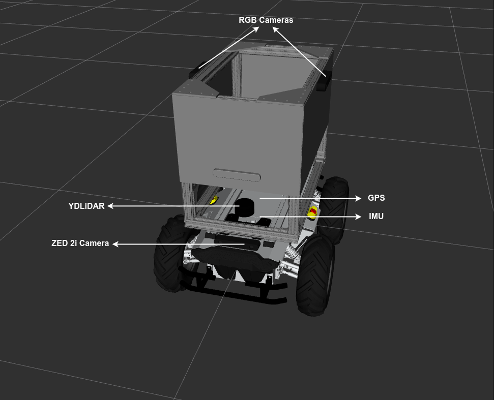

Introduction¶
In this simulation-only phase, teams would work on providing solutions depending on the simulation track picked.
Autonomy Track¶
The simulation platform to be used in this track is Gazebo Harmonic. Teams are required to develop, test and submit software to successfully complete the task of autonomously navigating the PARC AgRobot through maize fields.
Teams are provided with the PARC AgRobot‘s ROS 2 packages and Gazebo environment models (see description below) to enable them develop and test their solutions (see GitHub Repository).
The PARC AgRobot¶
The PARC AgRobot is an unmanned ground vehicle (UGV) equipped with different sensors to help you achieve your goal. The sensors are:
-
YDLiDAR: A LiDAR sensor located at the top of the base of the robot. The YDLiDAR publishes the
/scantopic. -
RGB Camera (x2): Two downward-facing RGB cameras are provided at the left and right side of the robot. These cameras are suspended via an overhang and gives top-view of the farmland. The topics published by these cameras have group names which are
/left_camera/and/right_camera/. -
ZED 2i Camera: This is a stereo camera at the front of the robot base. It publishes all the
/zed2/topics including point cloud data(/zed2/point_cloud/cloud_registered) -
GPS: For localization, we provided a GPS sensor which simulates a GNSS (Global Navigation Satellite System). It publishes the
/gps/fixtopic. -
IMU: An IMU sensor is added to the base and publishes on the
/imutopic.
The figure below shows the AgRobot with sensors labelled.

Simulation Environment¶
The simulation environment used in this phase is modeled as a realistic farmland with rough terrain and maize plants and was generated with the virtual maize field ROS package.